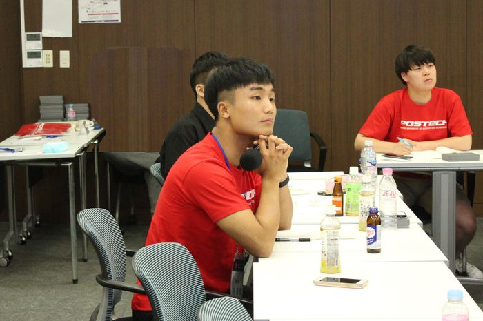

2018년의 1학기를 미국에서 보내고 다시 돌아온 한국, 미국에서의 교환학생 그리고 미국 전역과 남미 여행까지 마치고 왔지만 아직까지 본 학교로 돌아가기에는 2달 가까운 시간이 남아있었습니다. 대학 생활 중 마지막으로 보내는 여름방학인 만큼 저는 무언가 특별한 경험을 하고 싶었습니다. 그리고 우연히 눈에 들어온 2018 박태준 미래전략 연구소 에세이 공모전. 우리가 겪고 있는, 미래에 겪을 사회문제에 대하여 생각해보고 문제 해결을 위한 방안을 마련해보는 기회를 갖는 것은 물론, 본 수상자가 되면 저와 비슷한 관심사를 가진 친구들과 함께 토론할 수 있는 기회가 주어진다는 소식을 듣게 됐습니다.
귀국 이후 곧장 세대 간의 갈등을 주제로 에세이를 작성했고, 얼마 뒤 본 수상자에 올라 청년 비전 캠프에 참여할 수 있다는 소식을 듣게 됐습니다. 그렇게 부푼 마음을 안고 포항으로 내려가는 길, 저는 포항으로 향하는 기차 안에서도 발표 자료를 계속해서 확인하고 더욱 밀도 있는 발표를 준비하기 위해 노력했습니다. 그리고 다양한 대학에서 찾아오신 교수님들과 친구들과 함께 시작된 청년 비전 캠프. 서로가 준비한 발표를 진행하고 열띤 토론을 진행하면서 내가 아닌 다른 친구들이 가진 생각을 들으면서 제 스스로가 얼마나 틀에 박혀있던 사람이었는가 깨달을 수 있었습니다. 그리고 이 친구들이 강연장 앞에서 자신 있게 펼치는 발표 속, 다양한 아이디어들을 만나보면서 그 아이디어들이 현실 속에서 실천이 된다면 실제로 사회문제 해결의 실마리를 찾을 수 있을지도 모르겠다는 생각을 할 수 있었습니다.
그 뒤에 본격적으로 펼쳐진 청년 비전 캠프에서도 함께 참석한 친구들과 펼치는 교류의 장은 더욱 뜨거워졌습니다. 친구들과 함께 조를 이뤄 미션 해결을 더욱 효율적으로 진행하기 위해 멋진 아이디어들이 오갔고, 함께 미션을 수행하면서 땀과 웃음으로 뒤덮인 친구들은 불과 몇 시간 전에 만났다고는 믿어지지 않을 만큼 서로 가까워져 있었습니다. 공식적인 프로그램이 끝난 뒤에도 우리가 만드는 화합의 장은 밤새도록 이어졌습니다. 함께 작은 장소에 도란도란 모여 앉아 그 자리에서도 펼쳐지는 대화의 주제는 앞으로 우리의 인생과 함께 현재 우리 사회가 직면해있는 문제들에 대한 심도 있는 이야기들이었습니다. 이게 과연 대학생의 이야기들이 맞나 싶을 정도의 의문이 들법한 깊은 이야기들이 밤새도록 오갔고, 그 이야기를 들으면서 제가 지금까지 품어왔던 생각도, 또 미래에 대한 시선도 조금씩 바뀌어나갈 수 있었습니다. 그렇게 다음날 포스코에서의 견학을 끝으로 우리의 공식적인 행사는 끝이 났지만, 우리의 인연은 그 행사가 끝나고도 이어질 수 있었습니다.
그리고 2018년 여름을 기점으로 저의 생각과 미래도 커다란 변화를 겪을 수 있었습니다. 청년 비전 캠프를 통해 멋진 친구들을 만나고, 그 친구들이 풀어내는 이야기를 들으면서 저도 사회의 안정과 발전을 위해 기여할 수 있는 이가 되고 싶다는 생각을 하게 됐습니다. 그리고 저는 우리는 물론 미래의 사회가 직면하게 될 미래 문제에 관심을 심도 있는 관심을 갖게 됐습니다. 이후 외교부는 물론 다양한 국제기구에서 진행되는 행사에 적극적으로 참여하며 실무자들의 강연을 듣고 네트워킹을 진행할 수 있었습니다. 그리고 이러한 경험을 바탕으로 실제로 중국에서 반기문 전 유엔총장과 함께 중국 쿠부치 사막에서 사막화 방지를 위한 식목행사를 진행하고, 또 일본에서 청년들과의 학술교류를 앞두고 있습니다. 그리고 앞으로 이러한 경험들을 바탕으로 저는 실질적으로 사회문제 해결을 위해 적극적으로 동참해 나갈 것입니다.
이처럼 앞으로 우리의 미래 그리고 사회의 문제 해결을 위해 우리가 주체가 되었던 2018 에세이 공모전과 청년 비전 캠프, 이 자리를 통해 멋진 친구들을 만날 수 있었던 것은 물론 그 친구들에게서 얻은 좋은 기운을 바탕으로 제 미래 또한 설계할 수 있었던 시간이었습니다. 에세이 공모전과 청년 비전 캠프를 통해 내 스스로를 얽매어왔던 틀을 깨고, 새로운 미래를 향해 나아갈 수 있었던 시간, 2019년에도 많은 분들이 그 변화의 시간을 만끽할 수 있길 바랍니다.
